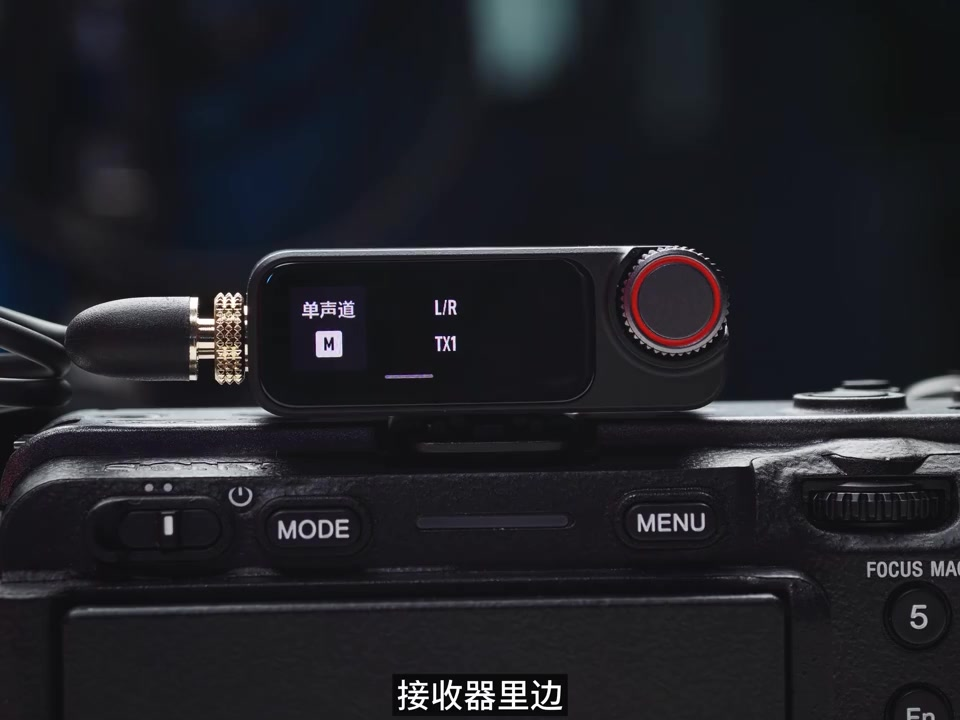
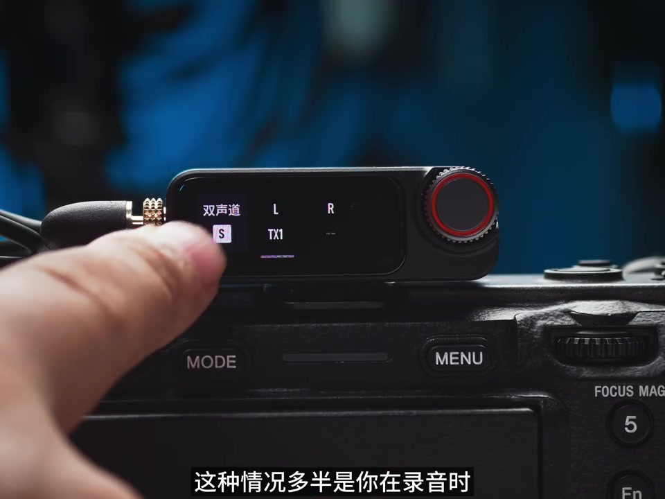
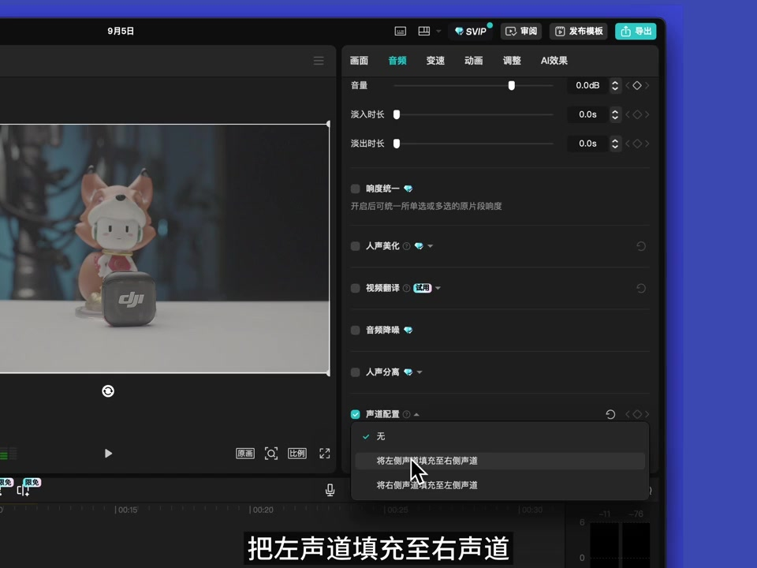
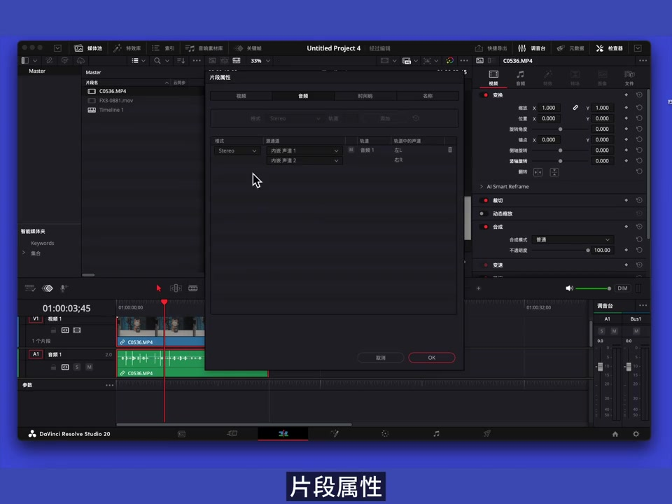
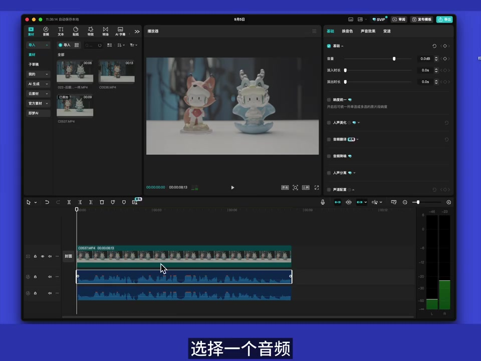
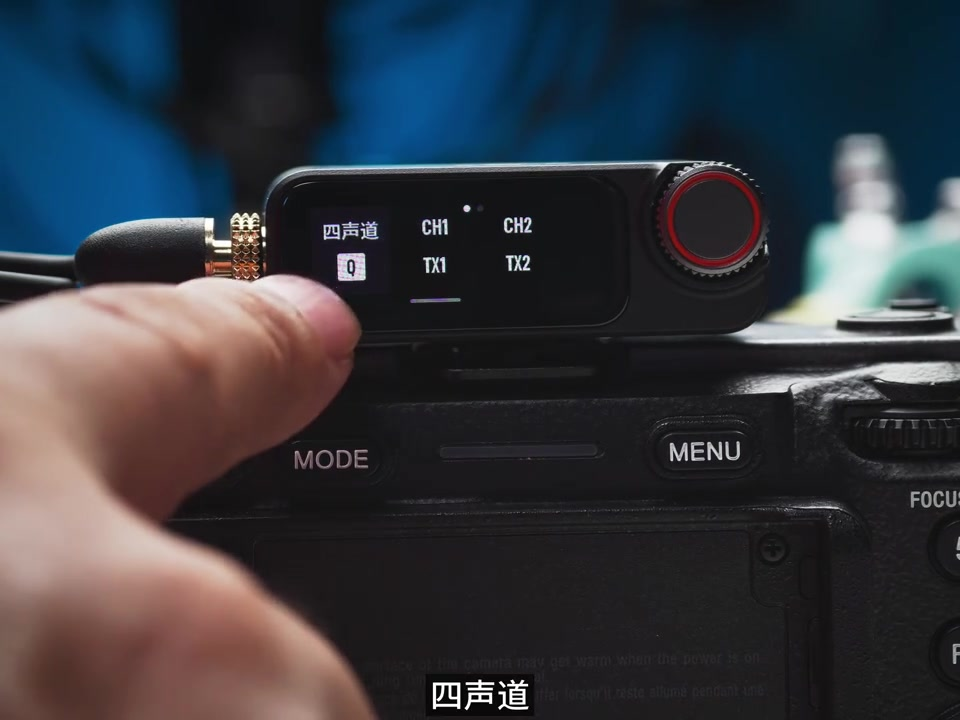
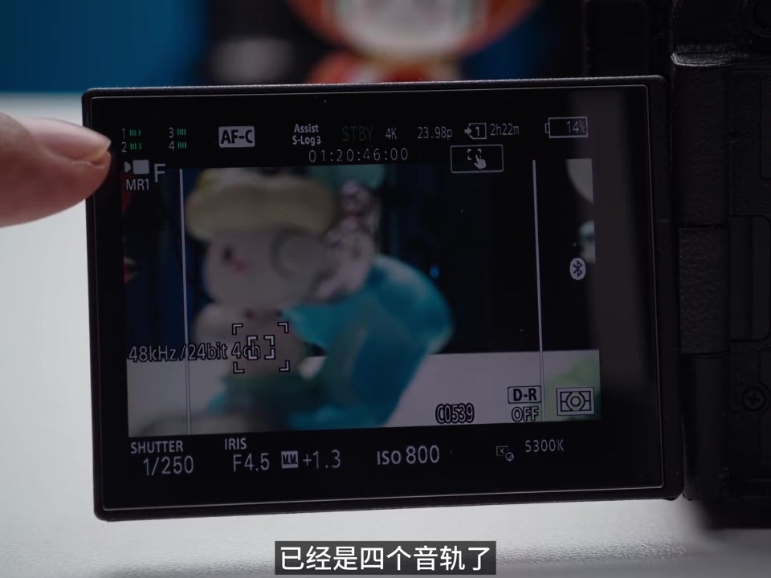

开场：声道到底怎么选
作者一上来就抛出两个问题：录音时不同声道究竟是什么意思？怎么设置才不翻车？标题承诺「一个视频弄懂」单声道、立体声，以及双麦多人录音。干货视频点个赞，然后正式开始。
「音频时不同声道究竟是什么意思，怎么设置才能不翻车。」
说明：Whisper 常把「发射器」识成「发热器」、「接收器」识成「接入器」、「剪映专业版」识成「简易/减音专业版」、「达芬奇」识成「台并器/打分器/达分器」、「大疆 Mic 3」识成「大家的麦克三」、「32 位浮点」识成「三召唯辅典」。叙述按画面字幕与语境校正；末尾转录区仍完整保留原始分段。
作者显示名缺失，元数据仅有 uploader_id 5f9a236c00000000010071ea；笔记话题覆盖大疆 Mic 3、视频收音、多人收音。
单人录音：接收器选单声道
最简单的场景：一个人，一个发射器，一个接收器。作者指出，此时应在接收器里选择单声道——相当于把一支麦克风的声音同时录进左右两声道，也是平时听起来最「正常」的那种声音。
「接入器里边咱们选择单声道，它相当于把一个麦克风的声音同时录进了左右两声道。」

只有一边耳机有声：多半选了双声道
作者设问：有没有遇到声音只在左耳或只在右耳，耳机却没坏？答案多半是录音时选了双声道（有时也叫立体声）——一支麦的声音只落在左右声道中的一个。

急救也不用慌：在软件里把有声那一侧复制到另一侧即可。演示素材只有左声道有声音。
剪映专业版：打开音频最后一项「声道配置」，选择「把左声道填充至右声道」，两声道立刻都有声音。

达芬奇：选中素材 → 右键「片段属性」→ 音频，把没有声音的一侧改成有声音的那个声道，点 OK。

双人录音：混在一起还是一人一轨
单人没问题后，场景切到双人：俩嘉宾各一个发射器，共用一个接收器。仍有两种选择。
选单声道：两人声音不分左右，直接混进同一条音频——省事，但后期没法单独调其中一人的音量或声线。
建议双声道：一人一个声道，后期可单独控制。作者说「乐乐的效果大概是这样」，结合前后语境应理解为「录制的效果」——一人一轨。
剪映专业版处理分两步：选中素材 → 分离音频 → 再复制一份；一条做「左填右」，另一条做「右填左」，两人听感就都正常，且可单独调。

达芬奇操作类似：取消链接 → 复制一段音频 → 各自在片段属性里只保留对应声道。
四人四轨：Mic 3 + 索尼相机进阶链路
评论区常见追问：嘉宾多到四个人，怎么设单独音轨？作者说这稍微有点进阶，需要特定麦克风和相机，并用手头这套演示。
大疆 Mic 3 默认一拖二，再准备两个发射器：长按链接按钮到红蓝闪烁，在接收器「设备配对」里依次配对 TX3、TX4。完成后主界面可见四个麦克风图标；进入 RX 设置，把声道选成四声道。

相机端：索尼相机搭配大疆 Mic 3 的热靴转接（单独购买）。作者用索尼 FX30，菜单 → 录制 → 录音 → MI 音频设置 → 选择四轨。画面左上角出现四条音量表，标注已是四个音轨。

拖进达芬奇可直接看到四条可单独控制的音轨。剪映专业版默认只显示一条：分离音频后复制三份，再分别切换多音轨到音轨二/三/四，即可单独控制。
一拖多适合多嘉宾或多声源；四个轨道各自可调，后期自由度更大。
发射器内录：给录制加双保险
作者最后建议：录音过程结合发射器内录。文件类型可选原文件与处理文件，并可批量开启录制。发射器能同步录一条 32 位浮点原始音频，以及经过降噪等处理后的处理音频——即使相机端出问题，内录仍是双保险。
「即使相机录制出现的问题，发热器内录的文件也给录制过程加了双保险。」
结尾欢迎评论区留言，有问题会解答。